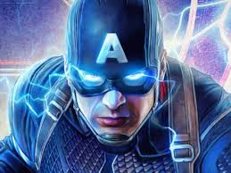
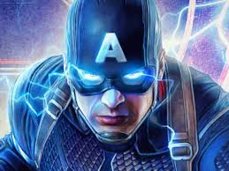
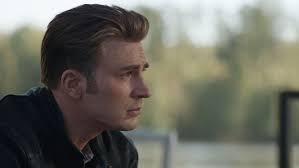
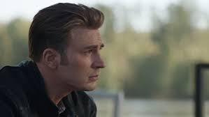

 


Captain Steven Grant "Steve" Rogers, also known as Captain America (born July 4, 1918),
is the titular main protagonist of the Captain America trilogy, one of the main protagonists
of the Avengers tetralogy, and is a cameo character in Ant-Man, Spider-Man: Homecoming and
Captain Marvel.
Steve is portrayed by Chris Evans, who also portrays The Human Torch in another Marvel
film in 2005, Fantastic Four and its sequel, Fantastic Four: Rise of the Silver Surfer, and
Curtis Everett from Snowpiercer, while Patrick Gorman portrayed him as an old man in Avengers:
Endgame.
| Full name | Steven Grant Rogers |
| Origin: | Captain America: The First Avenger |
| Alias: | Steve.
Captain America. Captain Rogers. Cap. Capsicle. America's New Hope. The First Avenger. The Star-Spangled Man with a Plan. The Captain. The Soldier. The Super Soldier. The Living Legend. The Man Out of Time. The Sentinel of Liberty. The Running Man. The Greatest Soldier in History. Big Guy. The Old Man. The World's First Super-Hero. God's Righteous Man. Flag-Waver. Nomad. War Criminal. Grandpa Frisbee. Vanilla Man. America's Ass. Captain Stevens |
| Abilities: | High Intelligence.
Indomitable Will. Leadership. Tactical Mastery. Master Strategist. Master Spy. Master Acrobat. Master Hand-To-Hand Fighter. Master Martial Artist. Weapon Mastery. Incredible Shield Mastery. Guns Mastery. Expert Pilot. Expert Artist. Bilingualism. Artificially Enhanced Physiology: Longevity. Superhuman Strength. Enhanced Resistance. Enhanced Speed. Enhanced Reflexes. Enhanced Agility. Enhanced Stamina. Enhanced Memory. Regenerative Healing Factor. |
| Occupation: |
United States Soldier.
USO Member. Strategic Scientific Reserve Subject. Leader of the Howling Commandos. Actor. Agent of S.H.I.E.L.D. Leader of the Avengers. |